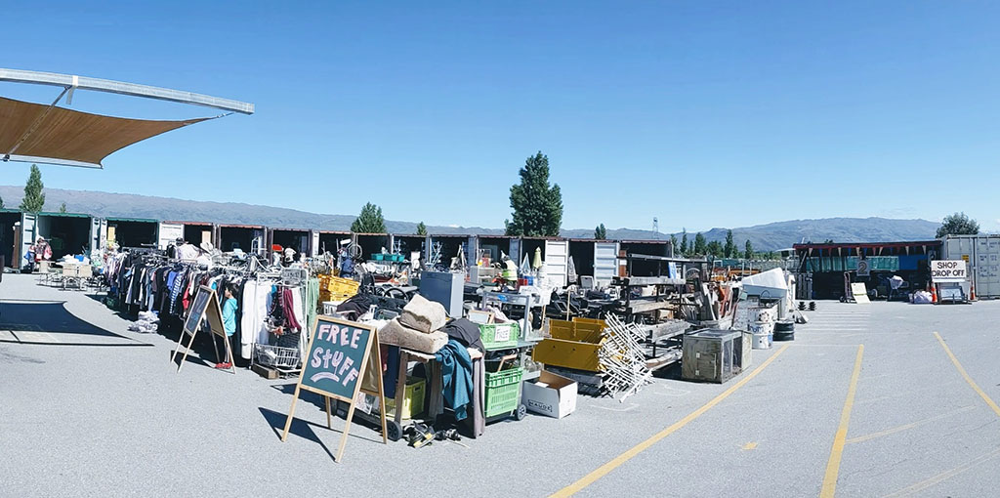

I'm not on social media but you can still share this page.
I'd love to represent you on the Gisborne District Council.
A place where richness comes from local pride, time outdoors, helping each other, and energising work in useful industries. An insulated place that's worth staying in and returning to.
We may not have the riches yet, but we can live rich lives.
I'm reminded of the city pride we had when I browse through old copies of the Photo News. Proud of our beaches, proud of our rivers, proud of our streetscapes, proud of each other.
There are sparks: Kiwa Pools, the surf clubs, skate parks and pump tracks, waka ama, local sports facilities, and busy use of our walkways.
Other visible well-trodden areas are sad: our city beaches, our city buildings, our city roads, our cleanliness.
Let's continue to boost active outdoor recreation and movement.
And let's uphold a social license to operate, whether it's an absentee landlord or a foreign forestry company.
If we're not setting up this place for our children to live energising useful adult lives here, then what is the point in any of this?
It goes for everyone; not just council, but each other, and big business. What are we leaving behind? A mess for our children to clean up? Or are we leaving better public amenities for those that follow?
We have incredible people choosing to pursue world-leading education, research, and industrial innovations right here; Mātai, Rāngai, Leaderbrand, EIT, East Coast Exchange, Pultron, Tōnui Collab, even the Environment Centre to name just a few.
There is surely an opportunity to support and encourage our leaders and creators to be long-term catalysts for joined-up, fairly distributed regional wealth.
It's not just about jobs. It is local ownership and reinvestment in public amenity that generates real regional wealth.
Right now there is very little economic incentive for households to be self-sufficient and resilient.
If anything, investing in self-sufficiency makes you feel worse off. Think about water. Pretty sure our farmers feel like they get a raw deal too.
A thing I admired about old Green leader Russel Norman was he recognised so clearly that the most effective way of getting society to be resourceful, less wasteful, was to pull on economic levers.

There are economic formulas that set the right incentives for sustainable development.
For other things I'm thinking:
And if you've made it this far, it might be worth reading Why me?.
Are you enrolled to vote? Check now!